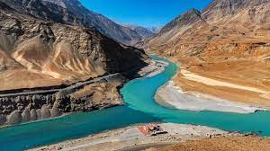
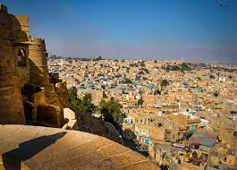
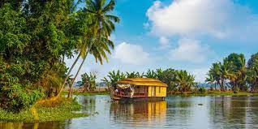
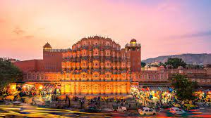

| Destination | Details |
|---|
Statue of Unity | The Statue of Unity is the sculpture of Iron Man of India ‘Sardar Vallabhbhai Patel’.It is situated in the Gujarat province of India confronting the Sardar Sarovar Dam.
The Statue of Unity is all around perceived as the ‘World’s tallest sculpture’.The sculpture was initiated on 31st October 2018 by the Prime Minister of India.The task was reported by Narendra Modi on seventh October 2010 when he was the Chief Minister of Gujarat. |
Taj Mahal | One of the most significant Mughal Empire architectural marvels still stands in all its beauty and finesse in Agra, Uttar Pradesh, India. The Taj Mahal is a white marble built by Mughal emperor Shah Jahan in memory of his third wife, Mumtaz Mahal. In Arabic, the Taj Mahal is known as "crown of palaces".
The Taj Mahal was built by a whopping 22,000 laborers, painters, stonecutters, embroidery artists. Legend has it that Emperor Shah Jahan intended to build another Taj Mahal in black marble across the river but a war with his sons interrupted these plans. |
| Ladakh | .Ladakh is the highest livable region with a settlement. It is located in the northern part of Jammu and Kashmir. Ladakh is an adventure and spiritual destination, which is attracting tourists with charming Buddhism culture, interesting natural beauties, mountain passes, adventure activities, and the colorful festivals.
The Indian Astronomical Observatory in Ladakh boasts the largest telescope in Asia at an astounding height of over 4500m. When in Ladakh, be ready to be greeted by numerous rare twin- humped Bactrian camels flocking the fascinating Nubra valley. |
| Jaislmer | The city was founded in the 12th Century by Maharaj Rawal Jaisal who later established his kingdom in the same place. Jaisalmer is named after Maharaj Rawal Jaisal. Later, he built the Jaisalmer Fort on the Trikuta Hill which has now become one of the most popular heritage sites. The fort walls guarded the entire city until Ala-ud-Din Khilji attacked and captured it in the 13th century and managed to hold it for nine years. Jaisalmer played a major role as the gateway to Persian countries, encouraging a flourishing trade during medieval times.
The Thar Desert in Jaisalmer plays a significant role in tourism, attracting tourists from all around the world. |
| Kerala | .With a network of 44 rivers and turquoise blue backwaters, Kerala basks in the lap of nature. This pristine and serene state lies in the South - Eastern part of India and is much favoured due to its exotic wildlife, herbs, emerald green hill stations and the crystal clear Arabian Sea along its coast. It is indeed God's own country.
According to a survey conducted by the National Sample Survey Office (NSSO), Kerala is said to be the cleanest state of India along with Sikkim. The only state to have hospitals and banks in every village. Along with being the cleanest state it also offers necessary facilities in every corner. Kerala is the only state to have provided banking facilities and hospitals in its remotest locations, thus increasing its overall development. |
| Jaipur | The whole Jaipur city was surrounded by a 6 & 3 meter (height & width) wall with eight gates in all four directions. Now, this is the Pink City area of Jaipur (Old Jaipur) I am talking about. So anyone who wants to enter or exit from Jaipur city has to pass through these gates.And inside the city, the construction was planned in a unique way of a 3×3 grid system which made it very easy for locals to travel across Jaipur, as all the small lanes of Jaipur would end up on the main road.
The color Pink is so closely associated with Jaipur that the moment you think of Pink color, Jaipur immediately comes to your mind. |